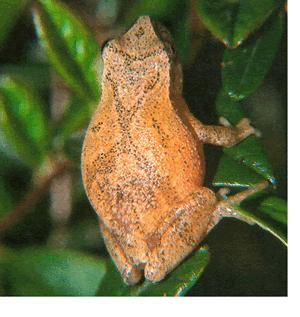

? Sounds of the season include the rise-and-fall chorus of male peepers serenading for mates. Their songs serve as territorial markers, a pointed message from creatures slightly larger than a human thumbnail.